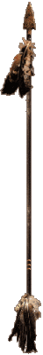
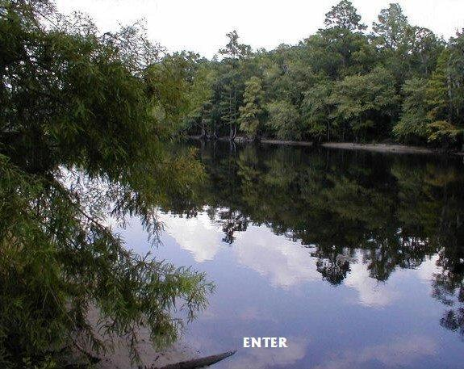
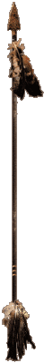

Welcome to the Official Tribal Web Site of



Walk easy on Mother Earth . . . . . . . . . . . . . . . . . . . . . . . . Walk easy on Mother Earth . . . . . . . . . . . . . . . . . . . . . . Walk easy on Mother Earth . . . . . . . . .